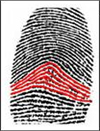
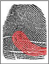
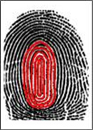
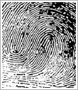
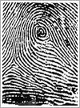
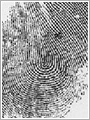

Fingerprints are little ridges on the end of human fingers and thumb. These ridges are arranged in a pattern of spirals and loops. Nature made these such that we can grip and hold on to things. The surface prevents things from getting slipped. early 1900s, people started to realize that fingerprints were unique, no two people have exactly the same fingerprint patterns. Fingerprint patterns are genetic but in the cases of identical twins, the patterns differ slightly.

FingerPrints
Types of FingerPrints
| Index | FingerPrints | Prints |
|---|---|---|
| 1 | Simple Arch(SA) |  |
| 2 | Tented Arch(TA) | |
| 3 | Ulnar Loop( UL) |  |
| 4 | Radial Loop( RL) | |
| 5 | Concentric Whorl (CW) | |
| 6 | Spiral Whorl (SW) | |
| 7 | Press Whorl (PW) |  |
| 8 | Composite Whorl (CPW) | |
| 9 | Double Loop (DL) |  |
| 10 | Peacock’s Eve (PE) |  |
| 11 | Variant (V) |  |